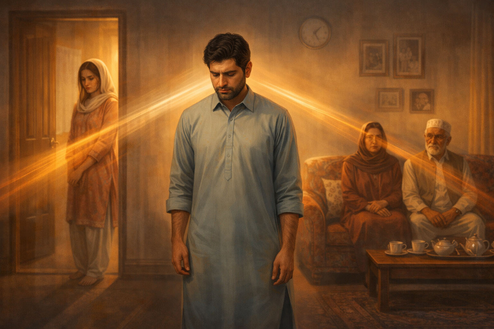

"I feel like I am living in a fishbowl." "I can't even argue with my husband without someone knocking on the door." "My mother-in-law rearranges my kitchen while I'm at work."
The joint family system is the bedrock of Pakistani culture, celebrated for its support and shared responsibility. But for many couples—especially new daughters-in-law—it can become a source of profound loss of autonomy and chronic stress.
The #1 Stressor
In my clinical practice, over 60% of marital counseling cases stem not from issues between the couple, but from interference by extended family members.
The "Sandwich Generation" Dilemma
It's not just the women who suffer. Men often find themselves "sandwiched" between their parents (whom they must respect religiously) and their wives (whose rights they must protect). This constant tug-of-war leads to burnout, emotional withdrawal, and resentment on all sides.
3 Strategies to Protect Your Peace
1. Physical Boundaries vs. Emotional Boundaries
You may not be able to move out immediately due to financial or cultural reasons. That is a reality we must accept. However, you can build emotional walls. This means:
- Not sharing every detail of your marriage with your in-laws.
- Politely declining unsolicited advice ("Thank you for the suggestion, I'll think about it" instead of arguing).
- Carving out "sacred time" with your spouse inside your room where family topics are banned.
2. The Art of "Respectful Assertiveness"
In our culture, saying "no" is seen as disrespect (badtameezi). We need to reframe it. You can be kind while being firm.
Example: Instead of saying "Don't come into my room without knocking!", try: "I need some private time to rest after work, so I'll be keeping the door closed from 5 to 6 PM. I'll join everyone for tea afterwards."
3. Communicating as a Team
For husbands and wives, the golden rule is: Public Unity, Private Disagreement. Never contradict your spouse in front of parents. If your mother criticizes your wife's cooking, defend her gently in public ("I actually like it this way, Ammi"), and discuss any improvements privately later.
When Boundaries Fail
Living in a high-conflict joint family can sometimes lead to clinical depression or anxiety. If you feel constant dread coming home, it may be time to speak to a neutral third party.
Therapy can provide you with:
- Communication scripts that actually work.
- A safe space to vent without judgment.
- Clarity on whether the environment is truly "toxic" or just "difficult."
Is family stress affecting your marriage?
Learn how to create harmony without losing yourself. Marriage counseling and relationship counseling available online.
Book a Confidential Session